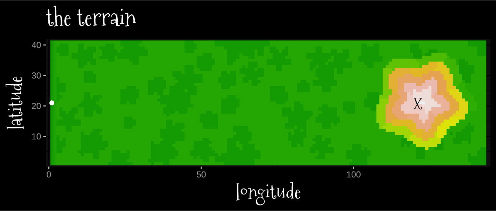
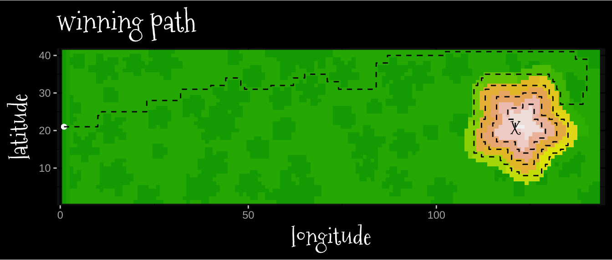
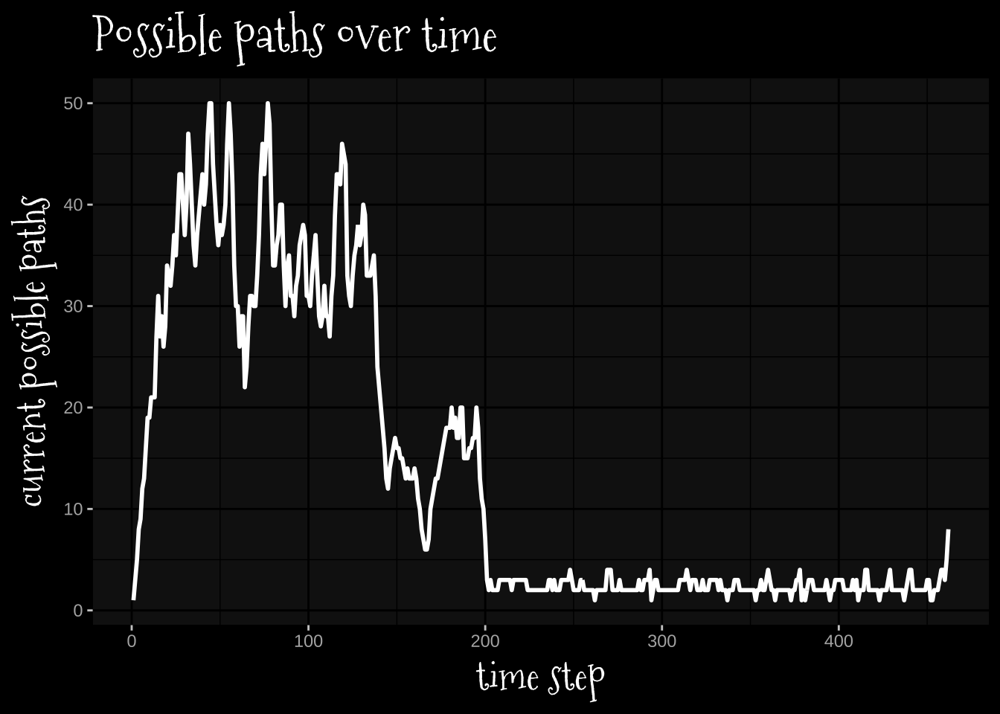
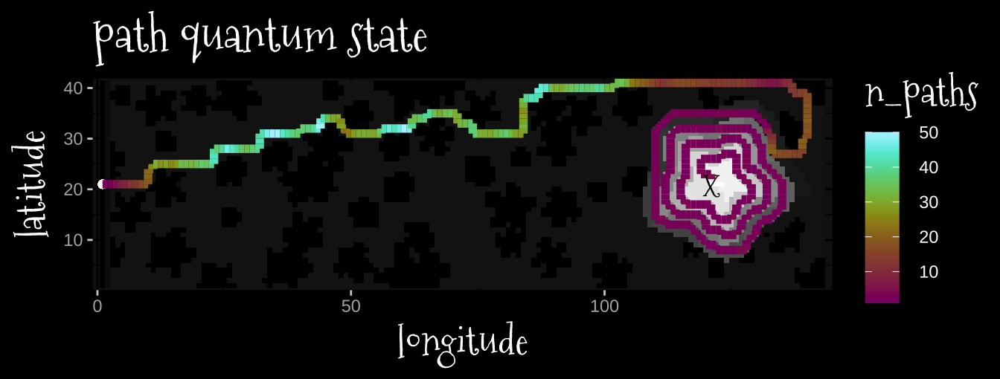

library(tidyverse)
library(rlang)
library(ggdark)
library(khroma)
library(showtext)
library(scales)
library(tidygraph)
library(ggraph)
font_add_google(name = "Mountains of Christmas", family = "christmas")
font_add(family = "Noto Emoji", regular = file.path(font_paths()[2], "NotoEmoji-VariableFont_wght.ttf"))
showtext_auto()
theme_set(dark_theme_gray() +
theme(title = element_text(family = "christmas", size = 20)))
knitr::knit_hooks$set(crop = knitr::hook_pdfcrop)Day 12
Part 1
This is a doozy. I’m not already familiar with shortest path algorithms, but I found one called Dijkstra’s Algorithm that I try to implement here.
Read in the data and convert to numeric matrix
lines <- read_lines("2022-12-12_assets/input.txt")height_map <- c(1, 1:26, 26)
names(height_map) <- c("S", letters, "E")lines |>
str_split(pattern = "") -> height_linesheight_lines |>
map(~height_map[.x]) |>
map(~setNames(.x, NULL)) |>
reduce(rbind) -> height_matheight_lines |>
reduce(rbind)->height_lettersGet the indices of the start and end points.
start_col <- floor(which(height_letters == "S") /nrow(height_letters)) + 1
start_row <- which(height_letters == "S") %% nrow(height_letters)end_col <- floor(which(height_letters == "E") /nrow(height_letters)) + 1
end_row <- which(height_letters == "E") %% nrow(height_letters)Just for fun, a map of the terrain.
height_mat |>
as_tibble(.name_repair = "unique") |>
mutate(y = 1:n()) |>
pivot_longer(cols = -y, names_to = "x") |>
mutate(x = str_remove(x, "\\.+") |>
as.numeric()) |>
ggplot(aes(x, y))+
geom_raster(aes(fill = value))+
geom_point(x = start_col, y = start_row)+
annotate(x = end_col,
y = end_row,
label = "X",
color = "black",
geom = "text",
family = "christmas",
size = 5)+
scale_fill_gradientn(colours = terrain.colors(10),
guide = "none")+
scale_x_continuous(expand = expansion(mult = 0.01))+
scale_y_continuous(expand = expansion(mult = 0.01))+
labs(x = "longitude",
y = "latitude",
title = "the terrain")+
coord_fixed()
start_idx <- c(start_row, start_col)The implementation
I did not write these out in the order that they appear.
path_states <- list(rbind(c(start_row, start_col)))I need a function to generate potential steps given an input that do not go off the map.
position = path_states[[1]]
make_steps <- function(position, nrows, ncols){
stepper <- rbind(c(-1,0),
c(1,0),
c(0,-1),
c(0,1))
next_steps <- apply(stepper,
1,
as_function(~.x + position)) |>
t()
# the steps can't go off the map
row_ok <- next_steps[,1] > 0 & next_steps[,1] <= nrows
col_ok <- next_steps[,2] > 0 & next_steps[,2] <= ncols
both_ok = row_ok & col_ok
next_steps <- next_steps[both_ok,]
return(next_steps)
}
steps <- make_steps(position, nrows = nrow(height_mat), ncols = ncol(height_mat))
steps [,1] [,2]
[1,] 20 1
[2,] 22 1
[3,] 21 2I’ll also need unique ids for every location to filter out previously visited locations, so I’ll just use the row and column concatenated.
make_node_ids <- function(steps){
ids <- apply(steps, 1, as_function(~str_c(.x, collapse = ",")))
return(ids)
}
step_ids <- make_node_ids(steps)
step_ids[1] "20,1" "22,1" "21,2"Only steps where the step to is no more than 1 greater than the current position.
score_steps <- function(position, steps, traversal){
current <- traversal[position[1], position[2]]
potential <- apply(steps, 1, as_function(~height_mat[.x[1], .x[2]]))
score <- potential - current
return(score)
}
score_steps(position, steps, height_mat)[1] 0 0 1One function to roll up the previous
- Generate valid steps
- Scores the steps
- Return valid, possible steps.
make_step_possibilitites <- function(state, height_mat){
curr_path <- state
curr_pos <- curr_path[nrow(curr_path), ]
next_steps <- make_steps(curr_pos, ncols = ncol(height_mat), nrows = nrow(height_mat))
next_scores <- score_steps(curr_pos, next_steps, height_mat)
next_steps <- rbind(next_steps[next_scores <= 1, ])
return(next_steps)
}For every path in the current set of paths, prune the step possibilities so that only one path can move to a node.
prune_steps <- function(path_states, step_possibilities){
step_ids <- map(step_possibilities, make_node_ids)
# we only need to compare each set of step possibilities once,
# hence i in 1:n-1 and j in 2:n
for(idx in 1:(length(path_states)-1)) {
for(jdx in (idx+1):length(path_states)) {
if(any(step_ids[[idx]] %in% step_ids[[jdx]])) {
# This is gratuitous, on second thought, but
# if path i is shorter, it gets the next step
# if path j is shorter, it gets the next step.
# if they're the same length, it doesn't matter, just give it to i
if(nrow(path_states[[idx]]) > nrow(path_states[[jdx]])) {
i_rows <- which(step_ids[[idx]] %in% step_ids[[jdx]])
step_possibilities[[idx]] <- rbind(step_possibilities[[idx]][-i_rows,])
}else if(nrow(path_states[[jdx]]) > nrow(path_states[[idx]])) {
j_rows <- which(step_ids[[jdx]] %in% step_ids[[idx]])
step_possibilities[[jdx]] <- rbind(step_possibilities[[jdx]][-j_rows,])
}else{
i_rows <- which(step_ids[[idx]] %in% step_ids[[jdx]])
step_possibilities[[idx]] <- rbind(step_possibilities[[idx]][-i_rows,])
}
}
}
}
return(step_possibilities)
}We also need to prune any steps into nodes that have already been visited.
prune_visited <- function(steps, visited){
node_ids <- make_node_ids(steps)
steps <- rbind(steps[!node_ids %in% visited, ])
return(steps)
}I need a function that takes in the preceding path states and the current (pruned) future steps. Rather than update the current paths directly, I pre-compile a list the length of the total next steps. Then, I add the next steps to their appropriate paths. I also prune paths which had no next steps at this stage.
make_new_paths <- function(path_states, step_possibilities){
n_steps <- map(step_possibilities, nrow) |> simplify()
total_steps <- sum(n_steps)
new_path_states <- vector(mode = "list", length = total_steps)
newstate_idx <- 1
for(idx in seq_along(path_states)){
for(jdx in seq_along(step_possibilities[[idx]][,1])){
new_path <- rbind(path_states[[idx]], step_possibilities[[idx]][jdx,])
new_path_states[[newstate_idx]] <- new_path
newstate_idx = newstate_idx+1
}
}
new_path_states[n_steps > 0]
return(new_path_states)
}Finally, we need to know when we finished!
check_winner <- function(steps, end_row, end_col){
winners <- apply(steps, 1, as_function(~.x[1] == end_row & .x[2] == end_col))
return(winners)
}path_states <- list(rbind(c(start_row, start_col)))
# This is just for book keeping
n_paths <- length(path_states)
visited <- make_node_ids(path_states[[1]])
step_possibilities <- map(path_states, ~make_step_possibilitites(.x, height_mat))
winner = F
# Hold onto your butts!
while(!winner){
if(length(step_possibilities) > 1){
step_possibilities <- prune_steps(path_states, step_possibilities)
step_winners <- map(step_possibilities, ~check_winner(.x, end_row, end_col))
if(any(map(step_winners, any) |> simplify())){
winner = T
break
}
step_possibilities <- map(step_possibilities, ~prune_visited(.x, visited))
new_path_states <- make_new_paths(path_states, step_possibilities)
n_paths <- c(n_paths, length(new_path_states))
visited <- c(visited, map(step_possibilities, make_node_ids) |> simplify())
}else{
step_possibilities <- map(step_possibilities, ~prune_visited(.x, visited))
new_path_states <- make_new_paths(path_states, step_possibilities)
n_paths <- c(n_paths, length(new_path_states))
visited <- c(visited, map(step_possibilities, make_node_ids) |> simplify())
}
path_states <- new_path_states
step_possibilities <- map(path_states, ~make_step_possibilitites(.x, height_mat))
}The example answer does not include the end state, and all paths right now have the same length, so
nrow(path_states[[1]])[1] 462But I want to make a plot, so here you go:
winning_path_idx <- which(map(step_winners, any) |> simplify())
winning_path <- path_states[[winning_path_idx]]
winning_step <- step_possibilities[[winning_path_idx]][step_winners[[winning_path_idx]], ]
winning_path <- rbind(winning_path, winning_step)
winning_path_df <- data.frame(winning_path) |> mutate(x = X2, y = X1)height_mat |>
as_tibble(.name_repair = "unique") |>
mutate(y = 1:n()) |>
pivot_longer(cols = -y, names_to = "x") |>
mutate(x = str_remove(x, "\\.+") |>
as.numeric()) |>
ggplot(aes(x, y))+
geom_raster(aes(fill = value))+
geom_point(x = start_col, y = start_row)+
geom_path(data = winning_path_df,
color = "black",
linetype = 2)+
annotate(x = end_col,
y = end_row,
label = "X",
color = "black",
geom = "text",
family = "christmas",
size = 5)+
scale_fill_gradientn(colours = terrain.colors(10),
guide = "none")+
scale_x_continuous(expand = expansion(mult = 0.01))+
scale_y_continuous(expand = expansion(mult = 0.01))+
labs(x = "longitude",
y = "latitude",
title = "winning path")+
coord_fixed()
Huh!
tibble(n_paths = n_paths) |>
mutate(n = 1:n()) ->n_path_df
n_path_df |>
ggplot(aes(n, n_paths))+
geom_line(linewidth = 1)+
labs(x = "time step",
y = "current possible paths",
title = "Possible paths over time")
winning_path_df |>
mutate(n = 1:n()) |>
left_join(n_path_df) -> winning_path_dfJoining, by = "n"height_mat |>
as_tibble(.name_repair = "unique") |>
mutate(y = 1:n()) |>
pivot_longer(cols = -y, names_to = "x") |>
mutate(x = str_remove(x, "\\.+") |>
as.numeric()) |>
ggplot(aes(x, y))+
geom_raster(aes(fill = value))+
geom_point(x = start_col, y = start_row)+
geom_path(data = winning_path_df,
aes(color = n_paths),
linewidth= 2)+
annotate(x = end_col,
y = end_row,
label = "X",
color = "black",
geom = "text",
family = "christmas",
size = 5)+
scale_fill_grayC(guide = "none", reverse = T)+
scale_color_hawaii()+
scale_x_continuous(expand = expansion(mult = 0.01))+
scale_y_continuous(expand = expansion(mult = 0.01))+
labs(x = "longitude",
y = "latitude",
title = "path quantum state")+
coord_fixed()Warning: Removed 1 row containing missing values (`geom_path()`).
Part 2
Ok, just need to abstractify the previous answer.
prune_steps2 <- function(path_states, step_possibilities){
step_ids <- map(step_possibilities, make_node_ids)
# we only need to compare each set of step possibilities once,
# hence i in 1:n-1 and j in 2:n
for(idx in 1:(length(path_states)-1)) {
for(jdx in (idx+1):length(path_states)) {
if(any(step_ids[[idx]] %in% step_ids[[jdx]])) {
# This is gratuitous, on second thought, but
# if path i is shorter, it gets the next step
# if path j is shorter, it gets the next step.
# if they're the same length, it doesn't matter, just give it to i
if(nrow(path_states[[idx]]) > nrow(path_states[[jdx]])) {
i_rows <- which(step_ids[[idx]] %in% step_ids[[jdx]])
step_possibilities[[idx]] <- rbind(step_possibilities[[idx]][-i_rows,])
}else if(nrow(path_states[[jdx]]) > nrow(path_states[[idx]])) {
j_rows <- which(step_ids[[jdx]] %in% step_ids[[idx]])
step_possibilities[[jdx]] <- rbind(step_possibilities[[jdx]][-j_rows,])
}else{
i_rows <- which(step_ids[[idx]] %in% step_ids[[jdx]])
step_possibilities[[idx]] <- rbind(step_possibilities[[idx]][-i_rows,])
}
}
}
}
return(step_possibilities)
}find_winner <- function(path_states, end_row, end_col, height_mat){
#path_states <- list(rbind(c(start_row, start_col)))
# This is just for book keeping
n_paths <- length(path_states)
visited <- make_node_ids(path_states[[1]])
step_possibilities <- map(path_states, ~make_step_possibilitites(.x, height_mat))
winner = F
# Hold onto your butts!
while(!winner){
if(length(step_possibilities) > 1){
step_possibilities <- prune_steps2(path_states, step_possibilities)
step_winners <- map(step_possibilities, ~check_winner(.x, end_row, end_col))
if(any(map(step_winners, any) |> simplify())){
winner = T
break
}
step_possibilities <- map(step_possibilities, ~prune_visited(.x, visited))
new_path_states <- make_new_paths(path_states, step_possibilities)
n_paths <- c(n_paths, new_path_states)
visited <- c(visited, map(step_possibilities, make_node_ids) |> simplify())
}else{
step_possibilities <- map(step_possibilities, ~prune_visited(.x, visited))
new_path_states <- make_new_paths(path_states, step_possibilities)
n_paths <- c(n_paths, new_path_states)
visited <- c(visited, map(step_possibilities, make_node_ids) |> simplify())
}
path_states <- new_path_states
step_possibilities <- map(path_states, ~make_step_possibilitites(.x, height_mat))
}
winning_path_idx <- which(map(step_winners, any) |> simplify())
winning_path <- path_states[[winning_path_idx]]
winning_step <- step_possibilities[[winning_path_idx]][step_winners[[winning_path_idx]], ]
winning_path <- rbind(winning_path, winning_step)
return(winning_path)
}Ok, now just to get a list of all starting points, and map over them.
all_starts <- which(height_mat == 1, arr.ind = T)nrow(all_starts)[1] 1724Ok, actually, I should just take all of these starting states as a path state!
starts_as_states <- vector(mode = "list", length = nrow(all_starts))
for(idx in seq_along(starts_as_states)){
starts_as_states[[idx]] <- rbind(all_starts[idx,])
}shortest <- find_winner(starts_as_states, end_row = end_row, end_col = end_col, height_mat)This isn’t the right answer :(
nrow(shortest)- 1[1] 458